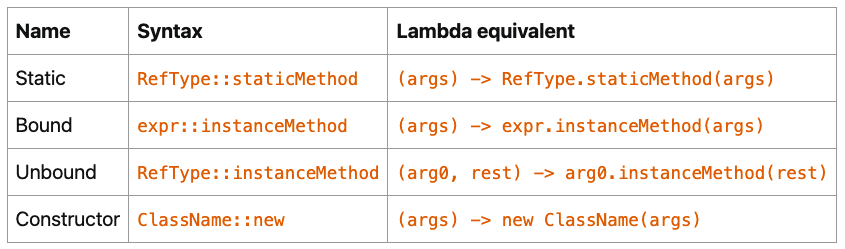

本书作者：测试开发刚哥，文章版权归个人所有，未经授权请勿转载。
Lambda Expression
有了 Lambda Expression，就不用再写 anonymous classes。
写 Lambda，首先要找到它的类型。
There is a restriction on the type of a lambda expression: it has to be a functional interface.
函数接口，只有 1 个抽象方法的接口：
@FunctionalInterface
public interface Runnable {
public abstract void run();
}
默认方法 do not count，所以下面这个也是函数接口：
@FunctionalInterface
public interface Consumer<T> {
void accept(T t);
default Consumer<T> andThen(Consumer<? super T> after) {
// the body of this method has been removed
}
}
静态方法也 do not count，所以下面这个还是函数接口：
@FunctionalInterface
public interface Predicate<T> {
boolean test(T t);
default Predicate<T> and(Predicate<? super T> other) {
// the body of this method has been removed
}
default Predicate<T> negate() {
// the body of this method has been removed
}
default Predicate<T> or(Predicate<? super T> other) {
// the body of this method has been removed
}
static <T> Predicate<T> isEqual(Object targetRef) {
// the body of this method has been removed
}
static <T> Predicate<T> not(Predicate<? super T> target) {
// the body of this method has been removed
}
}
接着，实现函数接口的抽象方法，比如 Predicate 的抽象方法：
boolean test(T t);
实现Predicate<String>：
Predicate<String> predicate =
(String s) -> {
return s.length() == 3;
};
省略了返回类型和方法名，只保留参数列表和方法体，用->连接。
再简化：
Predicate<String> predicate = s -> s.length() == 3;
这就是最常见的 Lambda，因为前面有 String，编译器能够知道，所以这里把(String s)简写为s，然后只有一行，再把大括号和 return 省略掉。
无 return，跟省略掉 return：
Consumer<String> print = s -> System.out.println(s);
无参数，用()代替：
Runnable runnable = () -> System.out.println("I am running");
Lambda 的使用：
List<String> retainStringsOfLength3(List<String> strings) {
Predicate<String> predicate = s -> s.length() == 3;
List<String> stringsOfLength3 = new ArrayList<>();
for (String s: strings) {
if (predicate.test(s)) {
stringsOfLength3.add(s);
}
}
return stringsOfLength3;
}
因为 Lambda 实现了接口的抽象方法，所以predicate.test(s)调用的实际上是 Lambda。
Lambda 不能修改变量值：
int calculateTotalPrice(List<Product> products) {
int totalPrice = 0;
Consumer<Product> consumer =
product -> totalPrice += product.getPrice(); // 编译错误
for (Product product: products) {
consumer.accept(product);
}
}
编译错误：Variable used in lambda expression should be final or effectively final
This process of accessing variable is called capturing: lambdas cannot capture variables, they can only capture values. A final variable is in fact a value.
也就是 Lambda 只能读，不能写。
使用 Lambda
Lambda 是 JDK8 跨时代的语法技术，它引领了大量的 JDK API 重写。
java.util.function 中包含了很多可供实现的函数接口，functional interfaces：
https://docs.oracle.com/en/java/javase/20/docs/api/java.base/java/util/function/package-summary.html
比如：
@FunctionalInterface
public interface Supplier<T> {
T get();
}
Lambda 实现：
Supplier<String> supplier = () -> "Hello Duke!";`
使用：
Random random = new Random(314L);
Supplier<Integer> newRandom = () -> random.nextInt(10);
for (int index = 0; index < 5; index++) {
System.out.println(newRandom.get() + " ");
}
比如：
List<String> strings = ...; // really any list of any kind of objects
Consumer<String> printer = s -> System.out.println(s);
strings.forEach(printer);
比如：
List<String> immutableStrings =
List.of("one", "two", "three", "four", "five");
List<String> strings = new ArrayList<>(immutableStrings);
Predicate<String> isOddLength = s -> s.length() % 2 == 0;
strings.removeIf(isOddLength);
System.out.println("strings = " + strings);
比如：
@FunctionalInterface
public interface Function<T, R> {
R apply(U u);
// default and static methods removed
}
Function<String, Integer> toLength = s -> s.length();
String word = ...; // any kind of word will do
int length = toLength.apply(word);
以上是 JDK 中最经典的4 种 function interface：
Supplier<T>Consumer<T>Predicate<T>Function<T, R>
总结一下，Lambda 的使用就是先实现 function interface 的 abstract method，然后①接口实例调用 abstract method，或者②接口实例被 forEach 等调用。
Lambda 使得 function interface 能够实例化：
Predicate<String> isOddLength = s -> s.length() % 2 == 0;
The java.util.function package is now central in Java, because all the lambda expressions you are going to use in the Collections Framework or the Stream API implement one of the interfaces from that package.
发现没有，把：
List<String> strings = ...; // really any list of any kind of objects
Consumer<String> printer = s -> System.out.println(s);
strings.forEach(printer);
简写一下，去掉中间的接口实例：
List<String> strings = ...; // really any list of any kind of objects
strings.forEach(s -> System.out.println(s));
这不就是常见到的 Lambda 的形态嘛。换句话说，Lambda 的结果就是函数接口实例（Function interface instance），使用 Lambda 本质上就是调用函数，Java 中没有函数的概念，通过 function interface 的 abstract method，引入了函数，从而造就了 Lambda。
Method References
Sometimes people call these lambda expressions “anonymous methods”, since it is just that: a method that has no name, and that you can move around your application, store in a field or a variable, pass as an argument to a method or a constructor and return from a method.
Consumer<String> printer = s -> System.out.println(s);
这里的 Lambda 没有什么逻辑，其实就是 System.out.println()方法的引用，所以可以简写为 Bound（System.out 优化前后一致）：
Consumer<String> printer = System.out::println;
Static：
IntBinaryOperator max = (a, b) -> Integer.max(a, b);
IntBinaryOperator max = Integer::max;
Unbound（优化前 s，优化后 String；优化前 user，优化后 User）：
Function<String, Integer> toLength = s -> s.length();
Function<String, Integer> toLength = String::length;
Function<User, String> getName = user -> user.getName();
Function<String, Integer> toLength = User::getName;
BiFunction<String, String, Integer> indexOf = (sentence, word) -> sentence.indexOf(word);
BiFunction<String, String, Integer> indexOf = String::indexOf;
Constructor：
Supplier<List<String>> newListOfStrings = () -> new ArrayList<>();
Supplier<List<String>> newListOfStrings = ArrayList::new;
总结：

Combining Lambda Expressions
Function interface 中的 defualt method 该登场了。
Predicate<String> nonNull = s -> s != null;
Predicate<String> nonEmpty = s -> s.isEmpty();
Predicate<String> shorterThan5 = s -> s.length() < 5;
Predicate<String> p = nonNull.and(nonEmpty).and(shorterThan5);
这里的and()就是 default method，它实现了 Lambda 的组合，也就是链式调用的既视感。
稍复杂点的：
Predicate<String> isNull = Objects::isNull;
Predicate<String> isEmpty = String::isEmpty;
Predicate<String> isNullOrEmpty = isNull.or(isEmpty);
Predicate<String> isNotNullNorEmpty = isNullOrEmpty.negate();
Predicate<String> shorterThan5 = s -> s.length() < 5;
Predicate<String> p = isNotNullNorEmpty.and(shorterThan5);
Comparators
@FunctionalInterface
public interface Comparator<T> {
int compare(T o1, T o2);
}
Lambda 实现：
Comparator<Integer> comparator = (i1, i2) -> Integer.compare(i1, i2);
Comparator<Integer> comparator = Integer::compare;
Comparator 的静态方法：
Comparator<String> comparator = Comparator.comparing(String::length);
This comparing() method is a static method of the Comparator interface. It takes a Function as an argument, that should return a type that is an extension of Comparable.
使用：
List<User> users = ...; // this is your list
Comparator<User> byName = Comparator.comparing(User::getName);
users.sort(byName);
还有默认方法 thenComparing：
Comparator<User> byFirstNameThenLastName =
Comparator.comparing(User::getFirstName)
.thenComparing(User::getLastName);
参考资料：
Lambda Expressions https://dev.java/learn/lambdas/